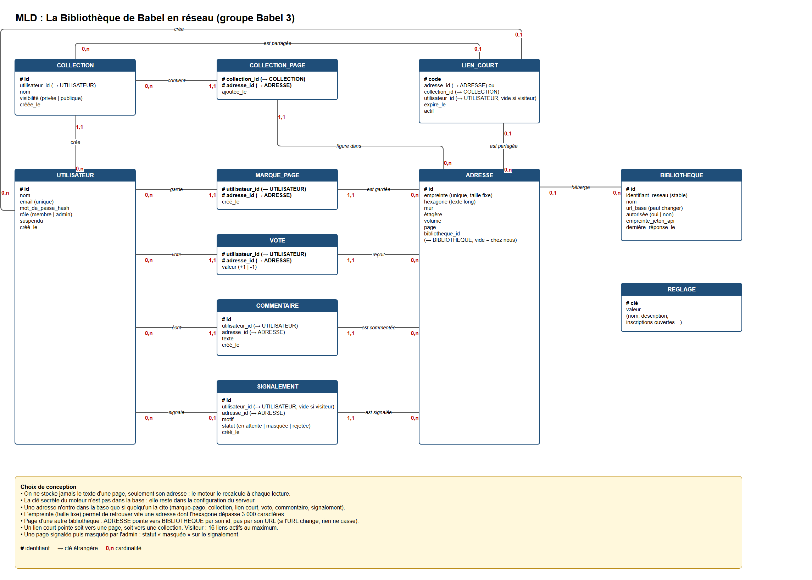
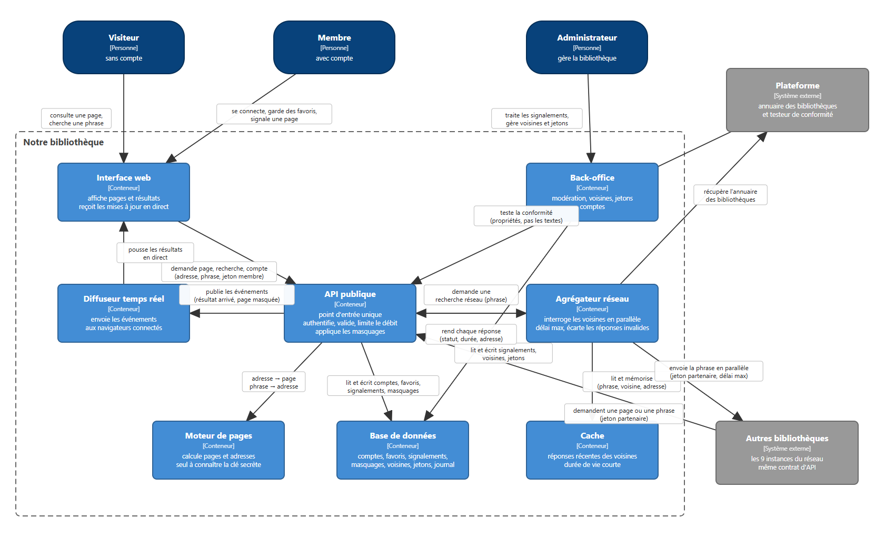

Comprendre avant de défendre
Le projet en une minute
L'idée
Borges : une bibliothèque contient toutes les pages possibles. Chaque adresse donne une page de lettres sans sens, et une phrase peut s'y cacher.
Le réseau
10 bibliothèques, codées séparément, qui répondent exactement pareil à une API commune. Comme des instances Mastodon.
Le moteur
Fourni par l'enseignant le 17 nov. Il calcule une page à partir d'une adresse et d'une clé secrète. On ne le code pas.
La clé de tous nos choix
On ne stocke jamais une page
pages possibles. Les stocker demanderait environ 1,5 × 104671 To. Donc :
- La page se recalcule à chaque fois : adresse + clé donnent toujours la même page.
- En base, on garde seulement les adresses (marque-pages, signalements, masquages).
- Masquer une page = la cacher, pas la supprimer : le moteur la recalculerait.
Notre démarche
Quatre livrables qui s'enchaînent
User stories
Qui veut faire quoi, pour quoi faire.
On part des besoins.Fonctions du moteur
Ce qu'on demande au moteur.
Chaque story qui touche une page y mène.MLD
Ce que notre base garde.
Les données que les stories exigent.Architecture
Qui appelle qui, avec quelles données.
Tout assemblé dans un schéma.Aucune techno choisie à ce stade. Exemple de chaîne : la story « page au hasard » donne la fonction « tirer une adresse au hasard ».
Livrable 1 · 31 stories, 5 rôles
Qui peut faire quoi
| Capacité | Visiteur | Membre | Admin | Autre biblio |
|---|---|---|---|---|
| Ouvrir une page, chercher une phrase | oui | oui | oui | oui |
| Page au hasard, page voisine | oui | oui | oui | non |
| Partager une page par lien | oui | oui | oui | non |
| Marque-pages, collections, historique | non | oui | non | non |
| Signaler une page | non | oui | non | non |
| Rechercher sur le réseau | non | oui | non | non |
| Masquer une page, gérer voisines et jetons | non | non | oui | non |
Cinquième rôle ajouté : la Plateforme de l'enseignant (annuaire et testeur de conformité).
Pourquoi ces choix
Le compte apporte de la mémoire
Marque-pages, collections, historique : ce qui demande de se souvenir de quelqu'un. Lire reste libre pour tous.
Seul un membre signale
On identifie qui signale : moins d'abus, un signalement par page et par membre.
Recherche réseau pour les membres
Chaque recherche coûte des appels aux 9 voisines. On limite la charge, la nôtre et la leur.
Le réseau apporte la comparaison
Chaque bibliothèque contient tout, mais avec une clé différente : une même phrase donne une adresse différente chez chacune.
Livrable 2 · besoins, pas algorithme
Ce qu'on demande au moteur
Les adresses
Analyser · Valider · Formater (une seule écriture) · Adresse voisine · Empreinte
Les pages
Générer une page (3 200 car.) · Trouver l'adresse d'une phrase · Normaliser une saisie · Tirer au hasard
La protection
Vérifier la conformité d'une page reçue d'une voisine.
Chaque fonction a : entrées, sortie, erreurs possibles, garanties. Le moteur ne fait pas : masquer, appeler les voisines, authentifier, garder la clé.
Les garanties exigées
Déterminisme
Même adresse + même clé = même page, aujourd'hui comme dans un an. Sinon un marque-page ne sert à rien.
Une seule écriture d'adresse
w4 et w04 désignent la même page. On refuse l'une, sinon favoris, signalements et caches se dédoublent.
Clé secrète hors de portée
Dans la configuration serveur, jamais en base, jamais dans une réponse ou un journal.
Conformité sans comparer les textes
Chaque clé donne d'autres pages. On vérifie des propriétés : 3 200 caractères, alphabet, phrase présente.
Livrable 3 · 11 tables
Ce que garde notre base

Les choix à défendre
- Aucune page stockée : seule l'adresse l'est, le texte se recalcule.
- La clé secrète n'est pas en base : elle reste dans la configuration serveur.
- ADRESSE est la table centrale : une adresse n'existe en base que si quelqu'un la cite.
- Une empreinte de taille fixe retrouve vite les hexagones de plus de 3 000 caractères.
- Une page d'une autre bibliothèque pointe vers BIBLIOTHEQUE par son id, pas par son URL : si l'URL change, rien ne casse.
- Un signalement vise une adresse ; l'admin le traite et passe son statut à « masquée » : rien n'est supprimé.
Livrable 4 · diagramme de conteneurs C4
Qui appelle qui

Une seule API publique
Authentification, validation, limite de débit et masquages appliqués au même endroit.
Un agrégateur en parallèle
Les 9 voisines sont interrogées en même temps, avec un délai max : une lente ne bloque pas les autres.
Un cache à durée courte
Évite de rappeler les voisines pour la même phrase.
Un diffuseur temps réel
Les résultats arrivent au fil de l'eau, une page masquée disparaît aussitôt.
Anticiper le jury
Les cas difficiles du sujet
- Une page qui choque ?
- Signalement par un membre, décision de l'admin, masquage valable partout (recherche, liens, API).
- Une adresse mal écrite ?
- Validation avant toute lecture, message qui nomme l'élément fautif, aucune page affichée.
- Une bibliothèque éteinte ou lente ?
- Délai max par voisine, statut visible, passage en « suspecte » après N échecs.
- Une qui répond n'importe quoi ?
- Vérification de conformité sur chaque réponse, suspension par l'admin.
- La clé secrète ?
- Dans la config serveur, vue par le seul moteur, jamais dans une réponse.
Pour chaque réponse : savoir à quelle story ou fonction elle renvoie, et dire si vous la maintenez.
Avant jeudi 11h30
Ce qu'il reste à trancher
- Lien court ou adresse complète pour partager ? Une adresse peut dépasser 3 000 caractères, un lien court demande de stocker la correspondance.
- Un visiteur peut-il rechercher sur le réseau ? Ici non, pour limiter la charge sur les voisines.
- Partager une collection fait-il apparaître le nom du membre ?
- Une phrase à cheval sur deux pages : possible ? À demander à l'enseignant.
Décidez, puis écrivez pourquoi : c'est ce que le jury demandera. Voir aussi 6-guide-oral.md.